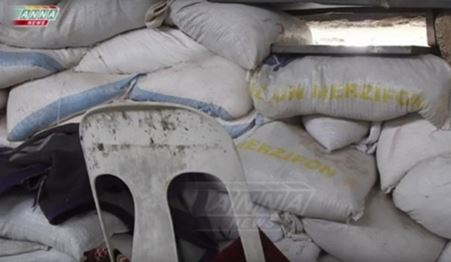

Le 7 décembre, Federica Mogherini a fait une déclaration qui laisse sans voix : l'UE serait le SEUL fournisseur d'aide humanitaire en Syrie. Voici à quel degré d'hystérie tombe la communauté internationale lorsque la libération d'Alep semble irréversible.
Comme le reprend l'agence d'information Regnum :
« Nous sommes les seuls, non pas un parmi d'autres, mais bien les seuls à fournir une aide humanitaire en Syrie. »
Rappelons qu’en septembre, après le bombardement du convoi humanitaire de l'ONU sur la route Castello à l'entrée d'Alep, l'ONU a déclaré que c'était trop dangereux pour continuer et le grand plan d'aide est tombé à l'eau.
Pendant ce temps-là, la Russie apporte plusieurs tonnes d'aide alimentaire, en médicaments, en eau et autres besoins vitaux chaque jour, comme vous pouvez le voir en détail ici.
En octobre, la Commission européenne met en place un grand plan pour sauver la population civile ... à Alep-Est. Très ciblé, le plan ... pour 25 millions d'euros. Je cite la déclaration adoptée le 2 octobre :
Elle vise premièrement à faciliter la fourniture urgente d'une aide humanitaire de base destinée aux civils d'Alep-Est qui couvre les besoins médicaux et les besoins en eau et en nourriture. (...) En second lieu, elle vise dans le même temps à garantir, depuis Alep-Est, l'évacuation sanitaire des blessés et des malades ayant un besoin urgent d'assistance médicale, la priorité étant accordée aux femmes, aux enfants et aux personnes âgées.
Rassurez-vous, Alep-Ouest n'est pas oubliée, car il est proposé d'y entreposer les réserves d'aide humanitaire ... pour ensuite tout transporter à l'Est.
Les civils à l'ouest peuvent donc... souffrir, avoir faim, soif, être sous les bombes des « terroristes modérés ».
Il faut sauver l'est de la ville, là où sont les groupes « d'opposition » soutenus par l'Occident : Daesh et Al Nusra.
Même si maintenant, avec la libération progressive de la ville, l'on sait que les civils à l'est n'avaient pas accès à l'aide humanitaire qui était réservée aux terroristes et stockée, que les hommes devaient se battre s'ils voulaient un bout de pain, que les terroristes faisaient un chantage à l'eau pour obtenir de l'essence et les sac d'aides humanitaires étaient utilisés pour se protéger, rien ne change dans le discours de la communauté internationale.
La libération en cours d'Alep devrait les rendre heureux, mais non. L'on observe une hystérie collective, qui tend à protéger, désormais ouvertement, les terroristes.
L'on ne compte plus les ministres des affaires étrangères et les dirigeants qui demandent l'interruption immédiate des combats. A l'ONU, il est clairement affirmé que l'agresseur n'est pas Daech, mais le régime qui a le toupet de défendre son territoire :
L'émissaire des Nations unies Staffan de Mistura a laissé entendre qu'Alep-Est pourrait tomber aux mains du gouvernement d'ici la fin de l'année. Lors d'une conférence à Rome, il a dit espérer qu'un « genre de formule » soit trouvé pour éviter « une terrible bataille qui se terminerait à Noël ou au Nouvel An ».
« Tomber aux mains », la ville tombe, elle n'est pas libérée. L'on appréciera la nuance. Du côté de l'UE, F. Mogherini est décidément très en verve :
« Nous ne pouvons pas faire passer le message qu’Alep est perdu, que nous tournons la page, que nous avançons. Non, nous devons encore sauver la population d’Alep, protéger les civils, appeler à un arrêt des frappes aériennes. »
Alep libérée, c'est Alep perdue. Pour qui ? La Haute représentante de l'UE ne le précise pas, mais chacun a compris. Toutefois, elle se rassure et rassure en même temps le représentant de l'ONU :
« I'm convinced the fall of Aleppo will not end the war, » Mogherini said during a panel discussion at a conference in Rome war with U.N. Syria envoy Staffan de Mistura.
La libération d'Alep et la joie des habitants enfin sortis du joug des terroristes sont des images insupportables pour l'Occident. La libération d'Alep confronte cet Occident boursoufflé à sa propre bassesse, insoutenable. Imaginez Dorian Gray révélant son portrait au monde entier?
K. B.-G.
1Federica Mogherini, est une femme politique italienne, membre du Parti démocrate, ministre des Affaires étrangères du gouvernement Renzi avec délégation aux Affaires européennes. Depuis novembre 2014, elle est Haute Représentante de l'Union pour les affaires étrangères et la politique de sécurité (chef de la diplomatie européenne).
Partager cette page